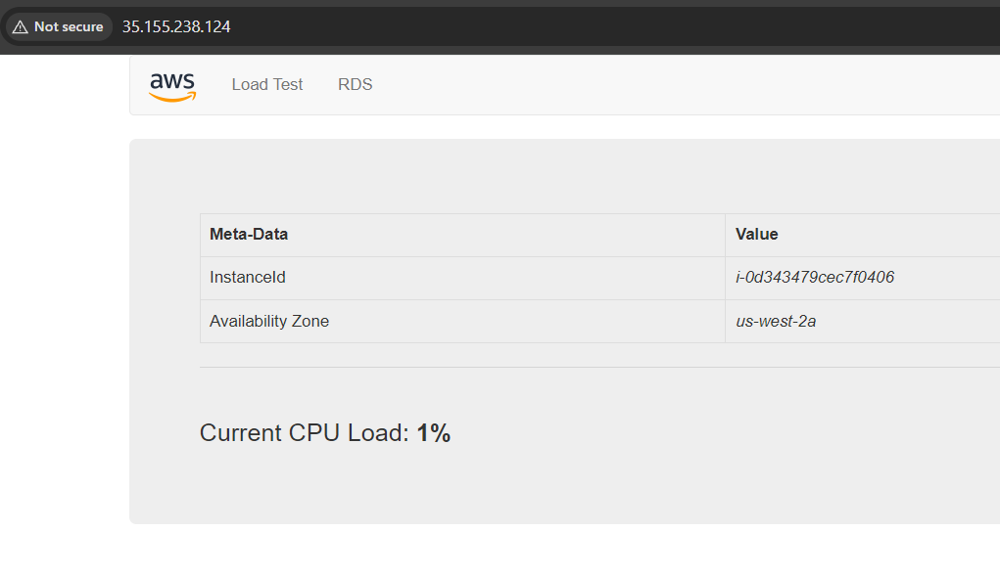

Amazon VPC
Rede virtual isolada que reúne os recursos e define o espaço de endereços IP utilizado.
10.0.0.0/16Documentação prática do laboratório de criação de uma VPC e configuração de um servidor web na nuvem.
Objetivo e atividades realizadas
O objetivo deste laboratório foi criar uma rede virtual na AWS, configurar sub-redes públicas e privadas e disponibilizar uma aplicação web por meio de uma instância Amazon EC2.
Durante a atividade, foram configurados componentes de rede, regras de acesso e um script de inicialização para preparar o servidor web automaticamente.
Principais componentes do laboratório
Rede virtual isolada que reúne os recursos e define o espaço de endereços IP utilizado.
10.0.0.0/16Divisão da rede em sub-redes públicas e privadas, com tabelas de rotas para direcionar o tráfego.
4 sub-redesComponente que permite a comunicação entre a VPC e a internet, conforme as rotas e regras configuradas.
Conectividade externaPermite que recursos em sub-redes privadas iniciem conexões com a internet sem receber conexões diretamente da internet por esse caminho.
Saída para a internetControla o tráfego permitido para a instância. Neste laboratório, foi configurada uma regra para acesso HTTP.
TCP · Porta 80Instância virtual utilizada para hospedar a aplicação e disponibilizá-la pelo endereço público.
Web Server 1 · t3.microInicialização automatizada com User Data
Na criação da instância EC2, foi utilizado um script de User Data para preparar o ambiente automaticamente.
O User Data executa comandos de inicialização na instância, reduzindo a necessidade de configuração manual do servidor.
Validação do acesso à aplicação
A instância EC2 foi iniciada, os testes de status foram aprovados e a aplicação do laboratório foi aberta com sucesso no navegador por meio do DNS público da instância.
A imagem abaixo é um registro do resultado obtido durante a atividade prática.

Registro do servidor web acessível pelo navegador.
Conceitos praticados na atividade